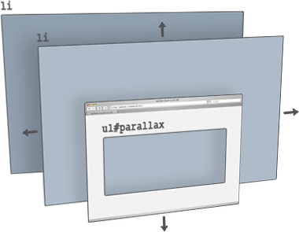

jquery.parallax
Download
git clone git://github.com/stephband/jparallax.git
Setup and teardown
jQuery( '.parallax-layer' ).parallax( options );
jQuery( '.parallax-layer' ).unparallax();
What does jquery.parallax do?
jParallax turns nodes into absolutely positioned layers that move in response to the mouse. Depending on their dimensions these layers move at different rates, in a parallaxy kind of way.
With a bit of CSS you can either set up windows to see these layers through, or leave them free to roam about.
The diagram on the right illustrates what jParallax does to the html:
<ul> <li class="parallax-layer"></li> <li class="parallax-layer"></li> </ul>
and here's a demonstration with some images:


More demos
- demos/index.html
- demos/stalkbuttons.html - multiple parallax.
- demos/remotecontrol.html - parallax by remote control.
- demos/thumbnails.html - beautiful interactive thumbnails.
- demos/target.html - demonstrates how smoothly jParallax handles window resizing.
Using jquery.parallax
The default behaviour of jParallax is to show the whole width of a layer in response to the mouse travelling the whole width of the mouseport. When the mouse is moved to the extreme left-hand side of the mouseport the left-hand side of the layer meets the left-hand side of its viewport, and when the mouse is moved to the extreme right-hand side of the mouseport the right-hand side of the layer arrives at the right hand-side of its viewport. In this way, bigger layers move faster.
The simplest way to use jParallax is to give layers different sizes in CSS. The Colour Drops Demo is made like this, with jParallax in its default state and the 'speed' of the layers controlled by the size of the images. Only the mouseport option is defined.
One problem with the default approach is that the uppermost layer is in front of the others, and any links in the layers underneath are not clickable. To solve this, jquery.parallax also accepts the options width and height. By making layers very small in CSS, but overriding those dimensions with the width and height options, it is possible to position links inside those layers and avoid the upper layers from obscuring the lower.
CSS
The classic style is the 'viewport' effect. To see layers through a viewport, wrap them in a container with the style:
.parallax-viewport {
position:relative;
overflow:hidden;
width:npx;
height:npx;
}
The position declaration sets up the viewport as an offset parent for the layers, while overflow:hidden; stops them being visible outside its boundaries. In order for the layers to respond, they must be given:
.parallax-layer {
position:absolute;
}
The stylesheet included with jquery.parallax provides these classes, and the demos are a good reference for some other effects you can achieve.
We all like tweaky-tweaky. jQuery.parallax also provides options and event bindings that give you control over a layer's behaviour.
Options
| Option | Type | Default |
| mouseport | selector string | jQuery object | jQuery(document) |
| Identifies DOM node to track the mouse in. | ||
| xparallax | boolean | 0-1 | 'n%' | 'npx' | true |
| yparallax | boolean | 0-1 | 'n%' | 'npx' | true |
| Set to true or false to enable or disable movement. Alternatively, to control the range over which a layer travels, either pass in an absolute value in pixels, or a scaling factor in the range 0-1 (scaling factors can also be expressed as percentage strings). Scaling factors outside this range are also accepted, but be aware that factors below 0 (or '0%') will reverse the direction of travel, and greater than 1 (or '100%') will make layer edges appear inside the extremes of the viewport. | ||
| xorigin | 0-1 | 'n%' | 'left', 'center', 'middle', 'right' | 0.5 |
| yorigin | 0-1 | 'n%' | 'top', 'center', 'middle'. 'bottom' | 0.5 |
| Only meaningful when xparallax or yparallax are not 1. Determines which point of the layer lines up with which point of the viewport when the mouse is at that point in the mouseport. Got that? It's easy really. It's the same behaviour as the css property background-position. If xorigin is set to 0 (or 'left'), then when the mouse is moved to the left hand side of the mouseport the left hand side of the layer arrives at the left hand side of the viewport. If it's set to 0.5 (or 'center'), then when the mouse is at the centre of the mouseport the centre of the layer is aligned with the centre of the viewport. And similarly with 1 (or 'right').Numbers outside the range 0-1 may also be used. |
||
| freezeClass | string | 'freeze' |
| Class set on a layer when it is frozen. | ||
| decay | 0-1 | 0.66 |
| Sets the rate at which the layers 'catch up' with the mouse position. 0 is instantly, 1 is forever. | ||
| frameDuration | int (milliseconds) | 30 |
| Length of time between animation frames. With a lot of big layers, you may want to increase the frame duration to save CPU. About 50 is acceptable (20 frames/second), but I like it zippy. Modern browsers like Google Chrome have really accurate timing, but many older browsers choke below about 15ms. | ||
| width | int (px) | undefined |
| height | int (px) | undefined |
| Values for layer dimensions, normally read from css, can be overridden. This does NOT change the size of the layer, only jParallax's idea of how big it is. This can be very useful in cases where you want to be able to 'click through' the upper layers. Typically you make layers very small in css, but tell jParallax they are big via the width and height options. | ||
Layer Options
In addition to the global options above, individual layers can be passed their own set of options as extra arguments:
jQuery('.parallax-layer') .parallax(options, layer_0_options, layer_1_options, ... );
As an example, to give the second layer a set xparallax value, but pass no options as default:
jQuery('.parallax-layer') .parallax({}, {}, {xparallax: '200px'});
A layer option object can have the properties xparallax, yparallax, xorigin, yorigin, width and height, with the same meanings as described above.
Events
Events can be triggered on layers using jQuery's trigger method:
jQuery('.parallax-layer') .trigger('freeze');
| Event | Event object |
| freeze | { type: 'freeze', x: 0-1, y: 0-1, decay: 0-1 } |
Stops the layer from moving. Use the optional event object properties to send the layer to a specific position: x and y tell a layer where to go (expressed as a ratio of the width of the viewport in the range 0-1), and decay how fast to go there ( where 0 is immediate and 1 is forever ). When the layer comes to rest the class 'freeze' is given to the layer. freezeClass is setable in the options object. |
|
| unfreeze | { type: 'unfreeze' } |
| Should be 'thaw', I suppose, really. That sounds weird, though. Unfreeze sets the layer in motion again. |
Some sites using jParallax
- The Beatles Rock Band
- Never Forget Us
- I'm Backing the Pub Campaign
- www.darrylworley.com
- Discover Tennesee
- foldifoldi.com
- omarelsayed.com
- htmlexpress.de
- thierrysegur.com
- kalendiar.cz
- Experimental flickr visualiser
- Communizine Wordpress theme
- housamz.com
Let me know if you have a site that uses jParallax - tweet me @stephband.
Tips
Transparent image layers
Lots of transparency in images will slow down a browser's ability to render quickly. Avoid making huge layers of semi-opaque graphics if you don't want lesser browsers to choke.
Version history
See the changelog.